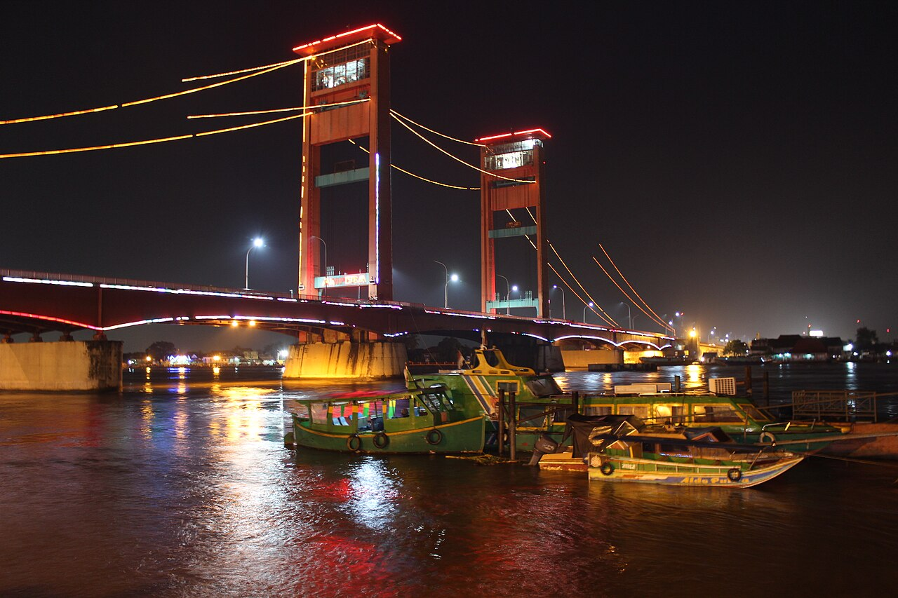

Sepuluh tempat
yang membentuk
sejarah sebuah kota
Destinasi, usaha lokal, dan catatan sejarah budaya. Setiap angka disertai sumber, dan yang belum pasti ditandai sebagai belum pasti.
Atlas Destinasi
Peta posisi yang sebenarnya
Sungai dan jalan digambar dari koordinat asli OpenStreetMap, bukan ilustrasi dekoratif. Sembilan destinasi punya koordinat terverifikasi dan ditandai bernomor. Pulau Kemaro tidak digambar karena koordinatnya belum kami verifikasi.
Arsip dalam Angka
Yang tercatat, dan yang belum
Angka di bawah dihitung dari isi arsip, bukan ditulis manual. Jumlahnya berubah kalau datanya berubah.
Garis Waktu
Seribu tiga ratus tahun, diringkas
Sembilan belas tonggak yang angkanya sudah tertulis di arsip. Sumbu digambar proporsional terhadap jarak tahun, jadi pola waktunya terlihat: dua belas tonggak menumpuk di rentang 1823 sampai 2023. Setiap tonggak menaut ke record asalnya beserta jumlah rujukannya.
Destinasi Unggulan
Mulai dari yang paling dikenal
Distribusi
Apa yang paling sering muncul
Setiap batang bisa diklik untuk menyaring katalog.
Sejarah dan Budaya
Pahami tempatnya sebelum datang
Direktori UMKM
Dukung usaha lokal Palembang
Metodologi
Data yang bisa ditelusuri, bukan klaim
Setiap angka punya sumber. Yang belum pasti, dikatakan belum pasti.